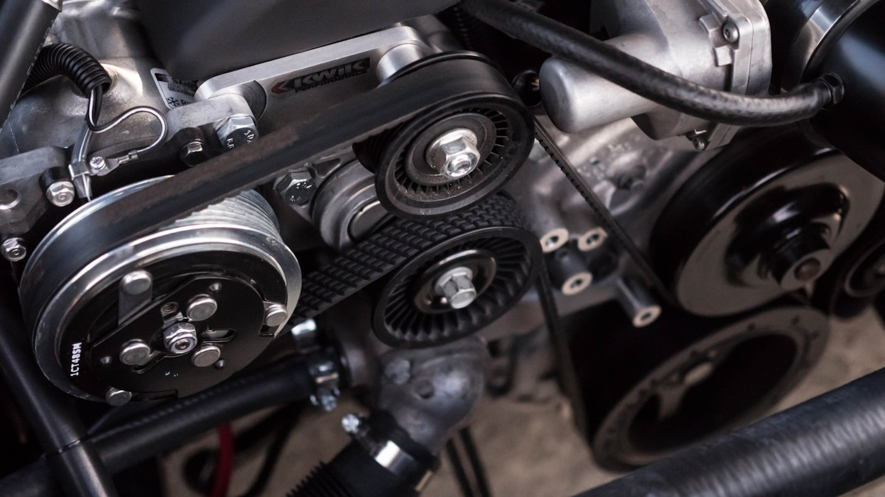
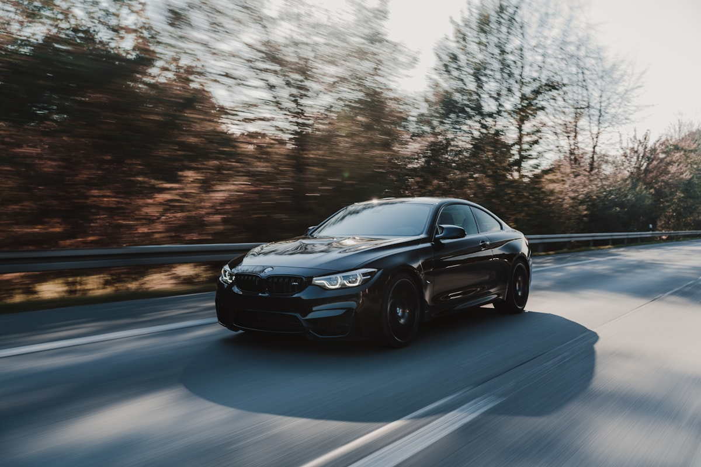

Originalität,
die zuverlässig fährt.
Motor, Getriebe, Fahrwerk, Elektrik und Wartung für Klassiker und ausgewählte Youngtimer.
Leistungen ansehen ↗Direction 01 · Precision Lab
Termin / 071 278 60 60Nach dem Film beginnt die Arbeit.
Unabhängige Werkstatt, kuratierter Fahrzeughandel und persönlicher Ankauf in Roggwil TG.
Werkstatt entdecken ↘
Werkstatt / Leistungsfelder

Motor, Getriebe, Fahrwerk, Elektrik und Wartung für Klassiker und ausgewählte Youngtimer.
Leistungen ansehen ↗Dokumentierte Etappen. Klare Entscheidungen. Respekt vor Patina und Historie.
Detailing, Saisoncheck, Lagerung und regelmässige Bewegungsfahrten.
Aktuelle Fahrzeuge / 04 verfügbar
 Verfügbar
Verfügbar Verkauft
Verkauft
VerfügbarFahrzeugankauf / Direkt & vertraulich
Die Garage / Roggwil TG